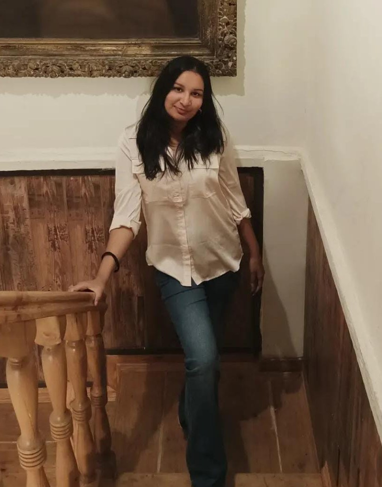

|  |
Hi, I'm Navya.a Computer Science Engineering student with a passion for technology and effective communication. I am proficient in HTML, CSS, JavaScript, and C, C++ and Java. Whether it's designing dynamic web interfaces or developing robust software applications,I'm driven by a relentless curiosity to explore new technologies what's possible in the world of coding. I am currently serving as an Area Director in Toastmasters, I thrive at the intersection of these two worlds.I love tackling complex tech challenges while empowering others to become confident speakers and leaders. Beyond my academic pursuits, I find solace in journaling, get lost in the pages of books, and express my creativity through writing. Whether it's crafting code or crafting culinary delights in the kitchen, I'm always seeking new ways to learn and grow. Join me on this exciting journey where I explore the wonders of tech, communication, and creativity. |